Great Salt Lake, from the window seat · Winter 2026Marin Headlands · July 2026Photographing the surf · July 2026Where the cliff ends · July 2026Angel Island, from above Sausalito · July 2026
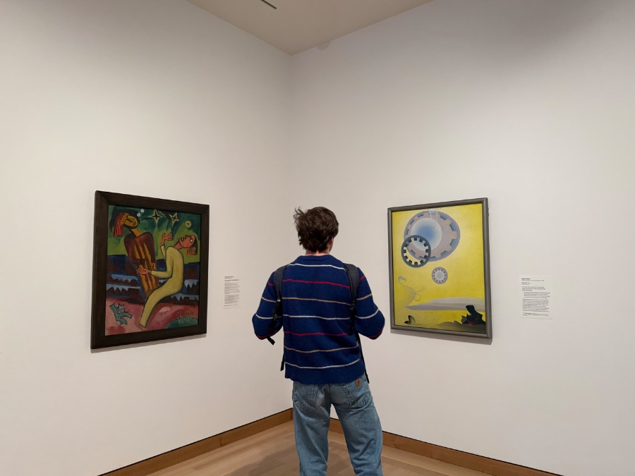
Two paintings, one corner · 2026
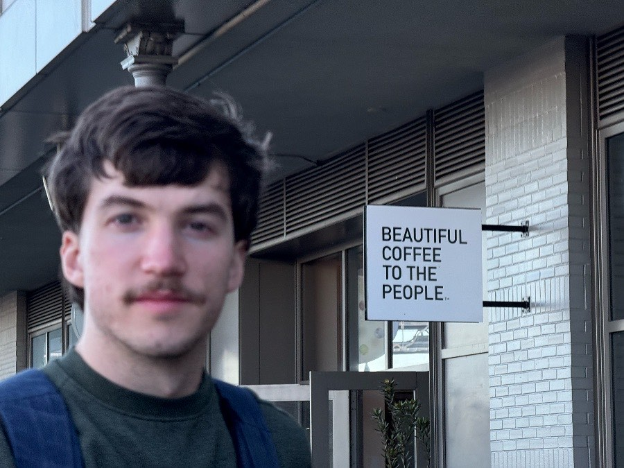
Beautiful coffee to the people · 2026
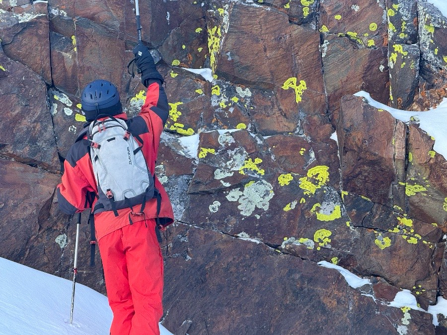
Lichen, above the snow · Winter 2026
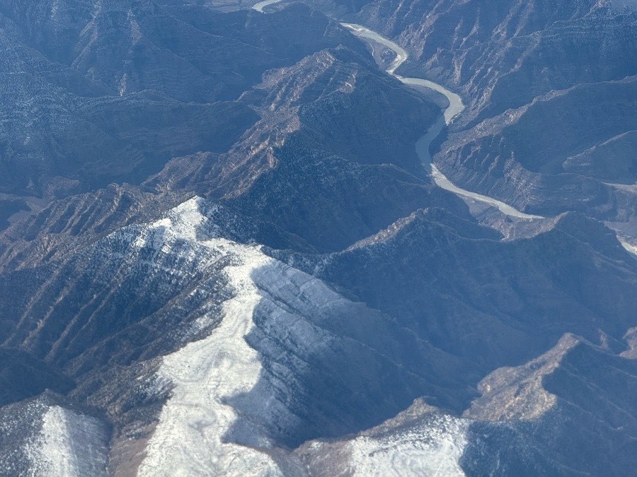
From the window seat · Winter 2026
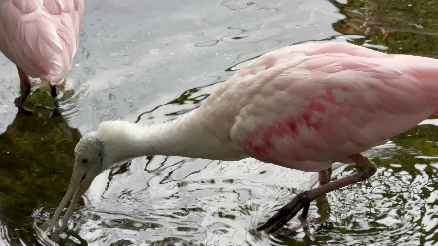
Spoonbill · 2025
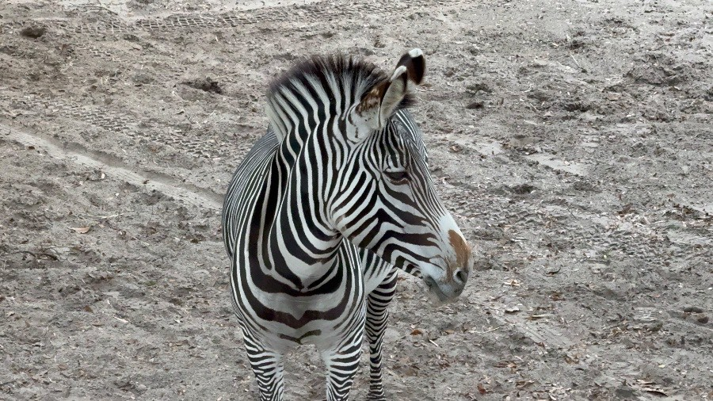
Zebra · 2025
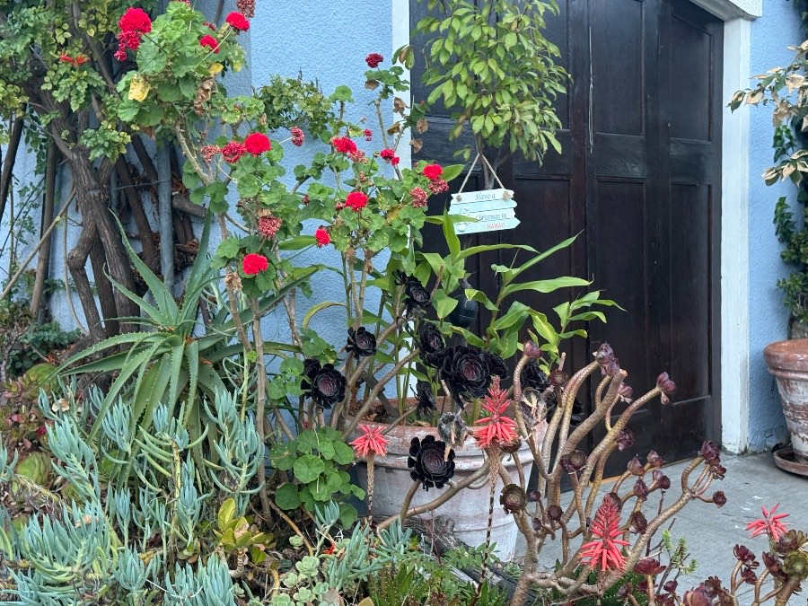
Christmas in Hawaii, allegedly · July 2026
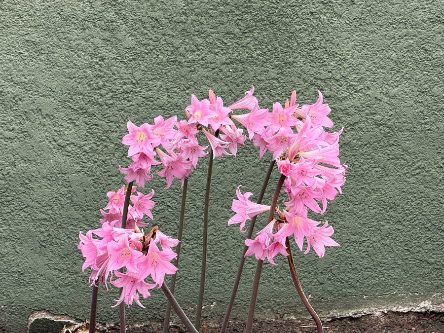
Naked ladies, green wall · July 2026
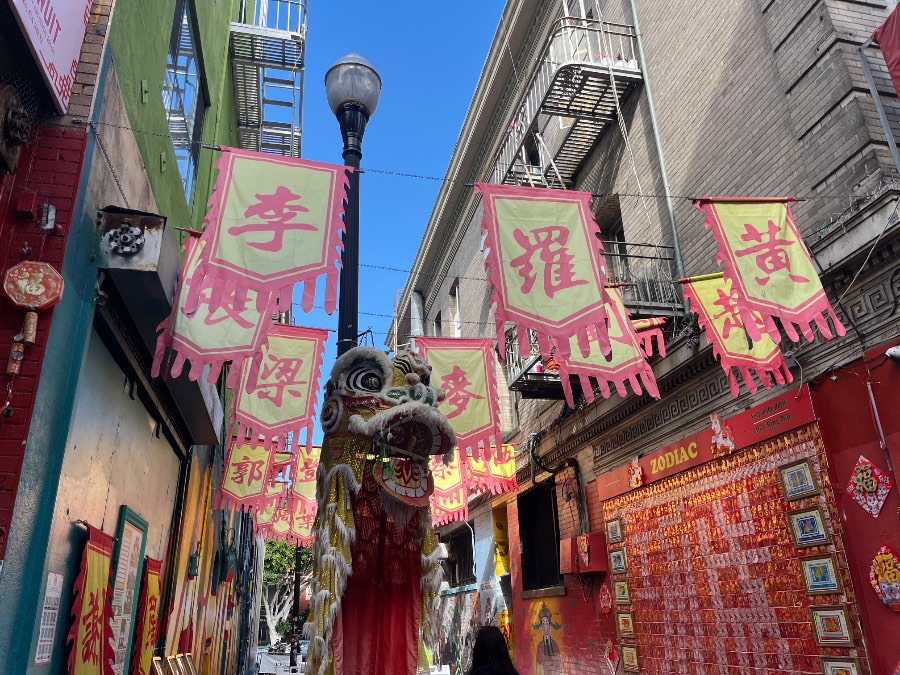
Chinatown, San Francisco · August 2026
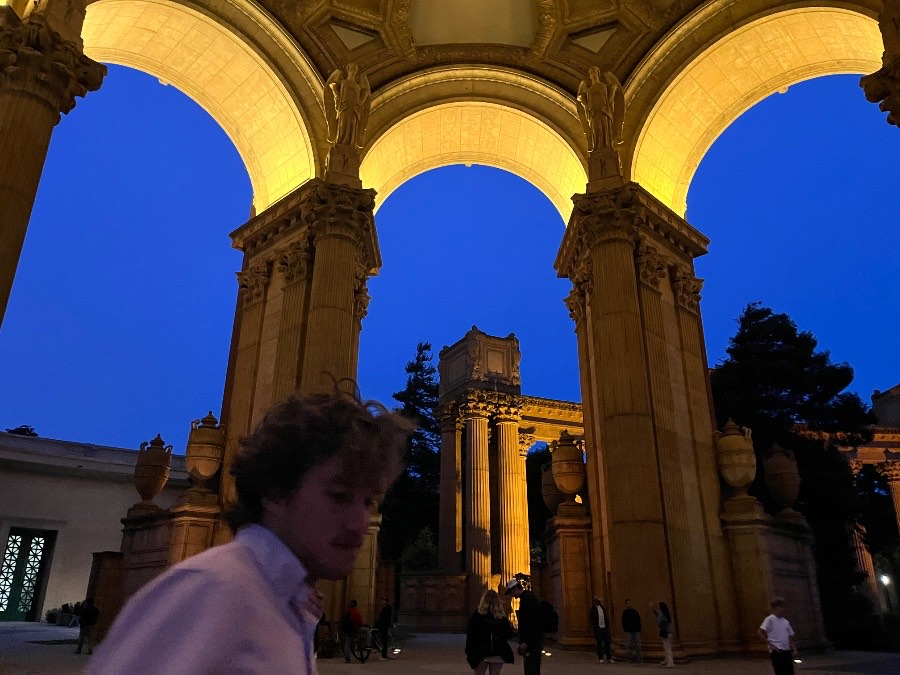
Palace of Fine Arts · August 2026
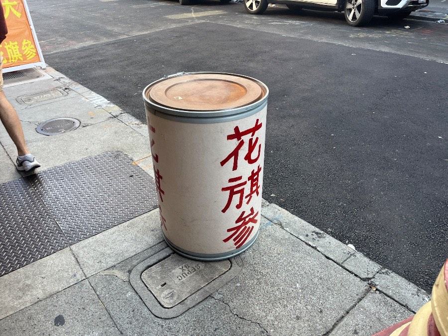
花旗參, on the curb · August 2026
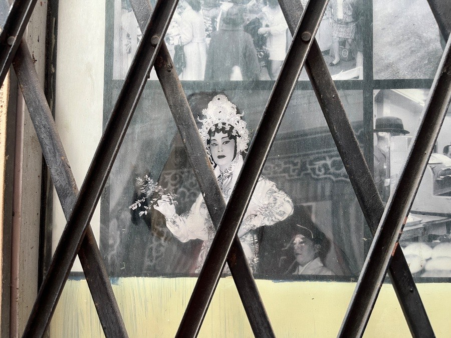
Opera, behind a gate · August 2026
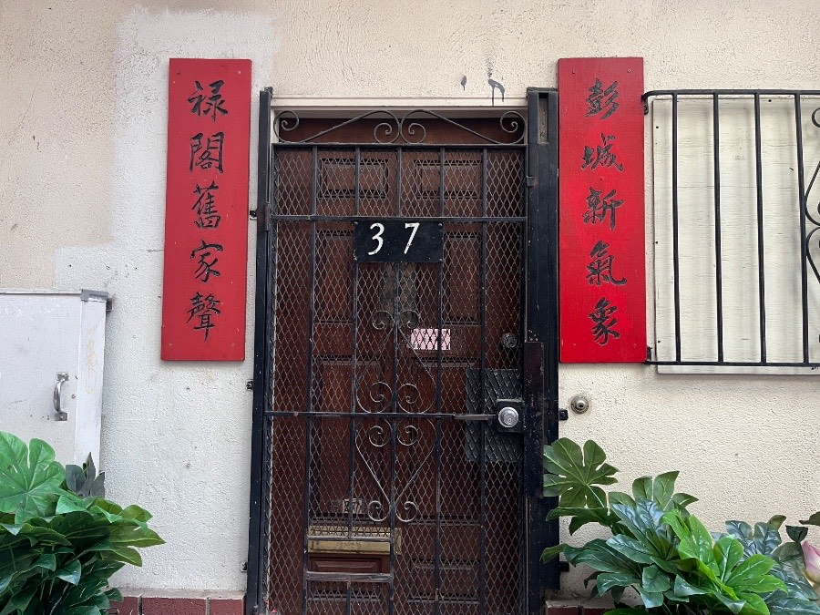
No. 37 · August 2026Under the lanterns · August 2026